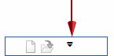

Restore the radial menu to default settings
The radial menu can be restored to its default settings.
-
Open the Customize dialog box using one of these methods:
-
Right-click a command on the ribbon and choose Customize Quick Access Toolbar.
-
Click the Customize arrow

, and from the menu, choose Customize.
-
-
Select the Radial Menu tab.
-
Select a Solid Edge environment.
-
Click the Reset button.
-
Select Close.